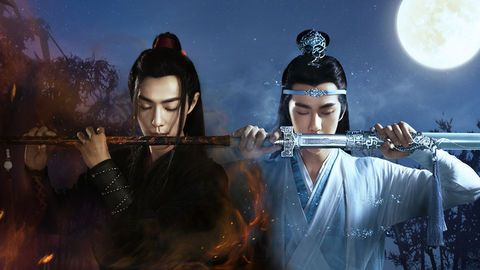

La historia nos sitúa en una especie de China medieval, donde entre la gente normal existen también los cultivadores, que son personas con un gran poder espiritual que dedican su vida a desarrollar ese poder y a perfeccionar sus técnicas de combate con la espada y otras artes

El protagonista y el co protagonista son famosos actores, cantantes, modelos, deportistas, portavoces, productores incluso uno es motociclista.
El elenco principal lo componen Meng Ziyi, Song Yi Yang, Xuan Lu, Zhen Fanxing, Wang Haoxuan, Wang Zhuo Chen y Zhu Zanjin
Este drama originalmente se basa en un libro llamado "Mo Dao Zu shi" tiene una adaptación a audiolibro, un anime, un manga, dos películas y una orquesta para las canciones del drama